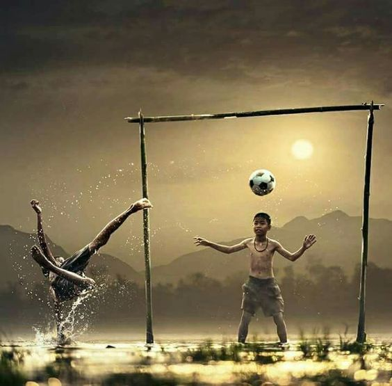

Section

Football
Le football est le sport le plus populaire et largement pratiqué au monde, captivant les cœurs de millions de personnes à travers le globe. Joué sur un terrain rectangulaire entre deux équipes de onze joueurs chacune, l'objectif est de marquer des buts en propulsant un ballon dans le filet adverse en utilisant n'importe quelle partie du corps, à l'exception des mains ou des bras. L'attrait universel du football réside dans sa simplicité, nécessitant un équipement et une infrastructure minimaux, le rendant accessible à des personnes de tous âges et de tous horizons. Les fans des quatre coins du monde célèbrent le football non seulement comme un sport, mais aussi comme un phénomène culturel qui se tisse dans le tissu des sociétés. Les stars du sport deviennent des icônes, admirées et vénérées par des fans qui voient en elles le reflet de leurs rêves et aspirations.

Joueur préféré
Cristiano Ronaldo est largement considéré comme l'un des plus grands footballeurs en raison de ses performances constantes de haut niveau, de son impressionnant record de buts, de sa polyvalence à différents postes, de ses compétences exceptionnelles et de son engagement envers la forme physique. Ses qualités de leadership, sa mentalité de gagnant et ses nombreuses réalisations individuelles et d'équipe contribuent à son statut.

pourquoi le football est un sport légendaire
Le statut légendaire du football tient à sa popularité mondiale, qui transcende les frontières et unit diverses cultures autour d'une passion commune. L'histoire de ce sport est marquée par des moments emblématiques qui sont devenus ancrés dans la mémoire collective, contribuant à son attrait intemporel. Au-delà du terrain, le football offre aux enfants des modèles influents, promouvant des valeurs telles que le travail d’équipe, la discipline et le fair-play. Sa capacité à favoriser un sentiment de communauté et de camaraderie, tant au niveau local qu’à l’échelle mondiale, souligne son impact au-delà du domaine sportif. En tant que sport accessible à tous, avec des exigences minimales et une résonance émotionnelle maximale, le football devient non seulement un jeu mais une source de rêves pour les aspirants joueurs du monde entier.